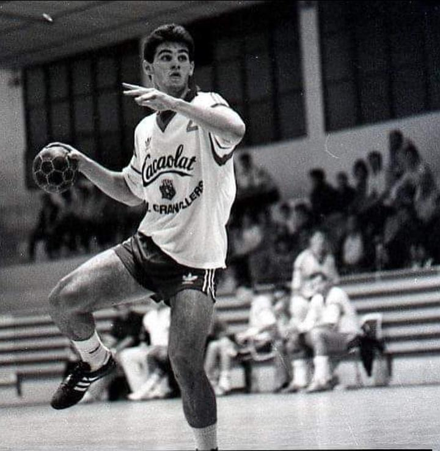
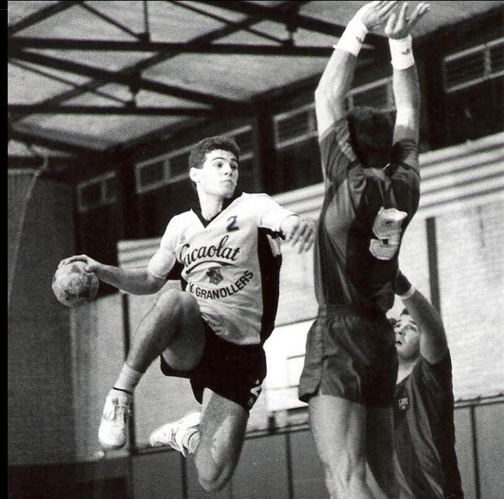

Inicio
Biografía

Enric Masip Borrás (Barcelona, España, 1 de septiembre de 1969) es un exbalonmanista español, considerado como uno de los mejores jugadores españoles de todos los tiempos. Considerado como uno de los mejores jugadores españoles de todos los tiempos. Ocupaba la demarcación de central y desarrolló la mayor parte de su carrera deportiva en el F.C. Barcelona (1990–2004). Fue internacional absoluto y capitán de España entre 1989 y 2003, totalizando 205 partidos y 656 goles. Participó en dos Juegos Olímpicos, seis Mundiales y tres Europeos.arcación de central Participó en dos Juegos Olímpicos, seis Mundiales y tres Europeos.
Se inició como jugador en las categorías inferiores del Balonmano Granollers. Jugó tres temporadas, entre 1987 y 1990, en el primer equipo del Balonmano Granollers, revelándose pese a su juventud como uno de los mejores centrales de la Liga ASOBAL. En 1990 fichó por el F.C. Barcelona que entrenaba Valero Rivera. Desde el principio fue titular indiscutible y capitaneó un equipo conocido como «Dream Team», que en los años 1990 conquistó todos los títulos del balonmano español y europeo. Se retiró como jugador en activo en 2004, debido a sus problemas en el pie derecho que arrastraba desde 2001, derivando a su vez constantes problemas con lesiones de espalda. Su último partido fue en febrero de ese año. Desde 2004 y hasta enero de 2013, trabajó profesionalmente en el FC Barcelona, inicialmente como uno de los responsables de la «Fundación FC Barcelona» y a partir de 2006, ocupaba el cargo de secretario técnico de la sección de balonmano. Fue internacional con las categorías inferiores de la selección nacional, logrando consecutivamente en categoría júnior, dos subcampeonatos del mundo en 1987 en Rijeka ante la selección anfitriona de Yugoslavia y como anfitriones en 1989 en Pontevedra, ante la Unión Soviética, siendo Masip la sensación del campeonato junto al central soviético Dujshebaev.
